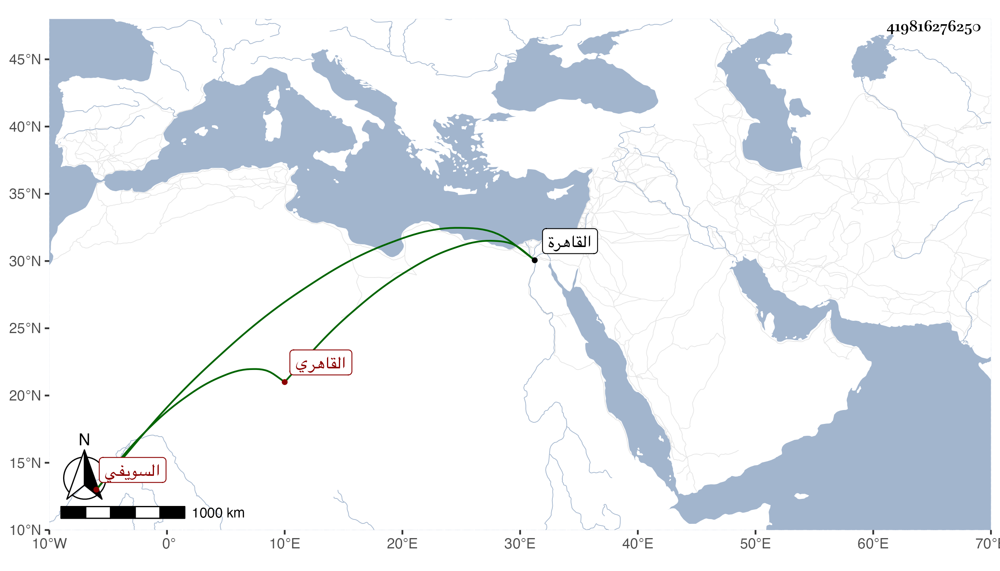

0902Sakhawi.DawLamic.ITO20230111-ara1.EIS1600.419816276250
Biography ID: 419816276250
إبراهيم بن أحمد بن علي برهان الدين السويفي ثم القاهري أخو نور الدين علي الإمام الآتي . ولد في سنة ثلاث وتسعين وسبعمائة وسمع بالقاهرة على ابن أبي المجد بعض الصحيح ومن ذلك بمشاركة الزين العراقي والهيتمي والتنوخي ختمه وحدث سمع منه الفضلاء سمعت عليه ختم الصحيح وحج وجاور وكان خيرا مات في شوال سنة ثلاث وستين رحمه الله .
